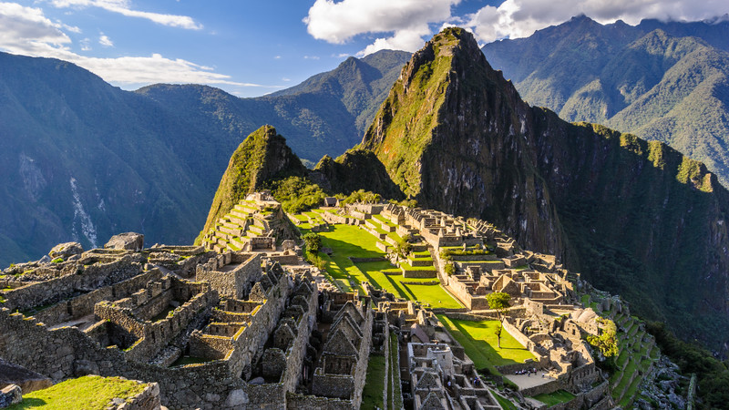
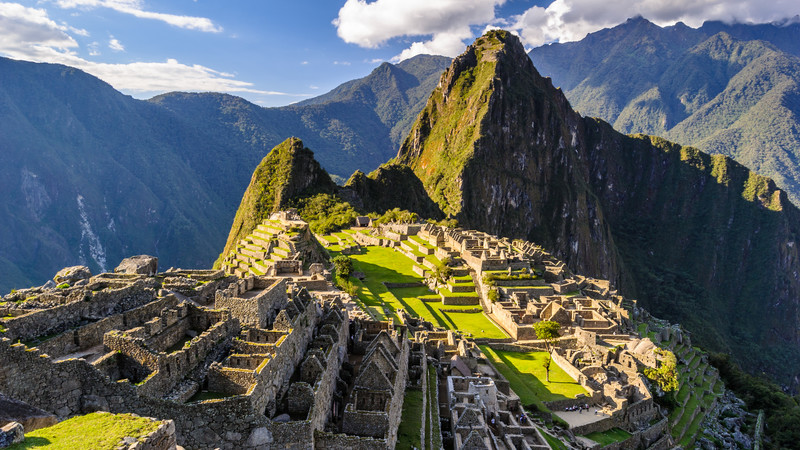

Bora Bora, French Polynesia

Geographical Location: Oceania
Known for its stunning overwater bungalows and crystal-clear waters, Bora Bora is a tropical paradise in the South Pacific.
The island's lush interior is adorned with tropical forests and rugged peaks, making it a paradise for hikers who seek adventure beyond its pristine beaches.
Photo Gallery


Santorini, Greece


Geographical Location: Europe
Santorini's unique volcanic landscape includes the famous Red Beach, where visitors can relax on crimson-hued sands and swim in the clear blue waters framed by dramatic red cliffs.
The island's cuisine is a delight for food lovers, with its fresh seafood, traditional Greek dishes, and renowned local wines, best enjoyed at charming tavernas overlooking the caldera.
Photo Gallery


Kyoto, Japan


Geographical Location: Asia
The city is a treasure trove of cherry blossoms in spring, with thousands of sakura trees bursting into bloom.
Kyoto's geisha culture is a captivating aspect of the city's heritage, and you can witness the artistry and elegance.
Photo Gallery


Machu Picchu, Peru
 

Geographical Location: South America
Machu Picchu's intricate stone architecture and mysterious history have earned it the nickname "The Lost City of the Incas".
The Inca Trail, a multi-day trek leading to Machu Picchu, offers not only a rewarding journey but also a chance to explore ancient ruins and amazing views.
Photo Gallery